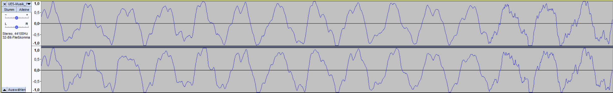
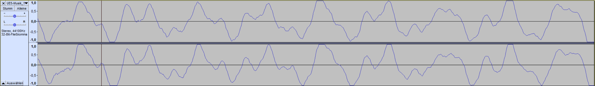
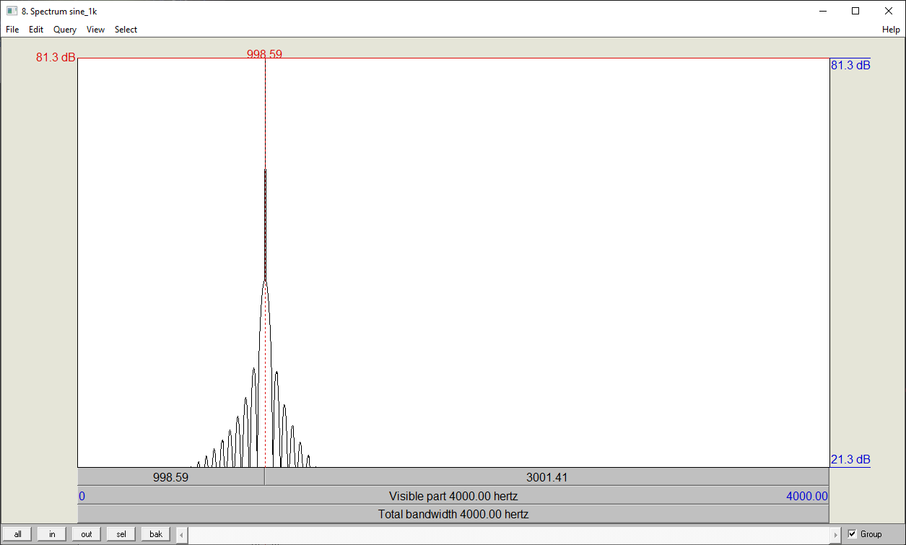
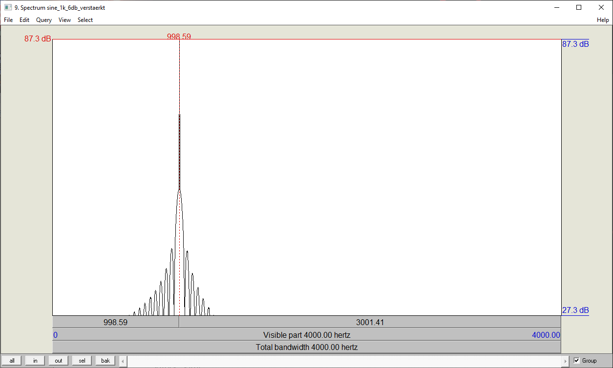
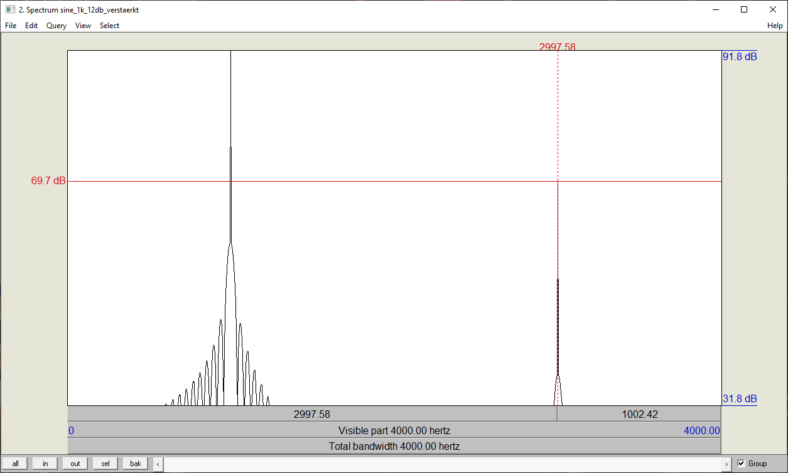
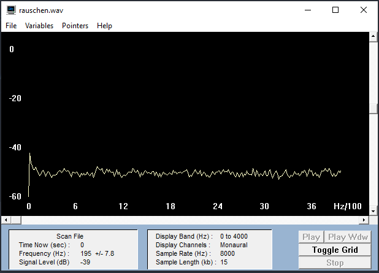
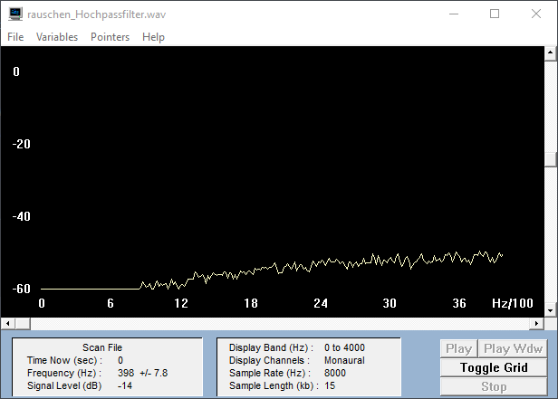

Zunächst sollt ihr eure Musikdatei um die Verstärkung 3, 6 und 9dB verstärken. Dies realisiert ihr durch Multiplikation der Abtastwerte mit dem linearen Verstärkungsfaktor F, den ihr zunächst aus der Verstärkung in dB berechnen müsst.
3dB Verstärkung
6dB Verstärkung
9dB Verstärkung
// Aufgabe 1
float dB = 12;
float F = (float) Math.pow(10, dB / 20);
for(int i = 0; i < samples; i++){
float f_sound = readWavFile.sound[i];
f_sound *= F;
if(f_sound > Short.MAX_VALUE) {
readWavFile.sound[i] = Short.MAX_VALUE;
} else if (f_sound < Short.MIN_VALUE) {
readWavFile.sound[i] = Short.MIN_VALUE;
} else {
readWavFile.sound[i] = (short) f_sound;
}
}
Bei welcher Verstärkung wird eine Verzerrung wahrnehmbar?
Ab 6dB Verstärkung kann man langsam ein zunehmend lauteres Hintergrundrauschen feststellen. Bei 9dB ist es schon recht deutlich zu hören, aber eine wirkliche Verzerrung ist noch kaum wahrzunehmen. Bei einer Verstärkung um 12dB ist gerade zum Ende hin eine Verzerrung feststellbar und bei einer Verstärkung um 15dB ist sie auf jeden Fall gut zu hören.
12dB Verstärkung
15dB Verstärkung
Clipping bei 12dB nur am Ende leicht zu hören:
Clipping bei 15dB deutlich erkennbar & hörbar:
Ihr sollt nun die 1kHz-Sinusschwingung um 6, 9 und 12 dB verstärken und den resultierenden Klirrfaktor k berechnen. Der Klirrfaktor lässt sich aus dem Frequenzspektrum berechnen.
Sinus 6dB Verstärkung
Sinus 9dB Verstärkung
Sinus 12dB Verstärkung
1kHz Sinus unverstärkt:
Beim Originalton gibt es keine weiteren Obertöne. Die Frequenz des Grundtons liegt logischerweise bei 1000Hz und die maximale Amplitude liegt bei 81,3dB. Ohne weitere Obertöne gibt es auch kein Klirren, also ist der Klirrfaktor k = 0.
Klirrfaktor 6dB Verstärkung
Bei einer Verstärkung von 6dB treten ebenfalls keine Obertöne auf. Die Frequenz des Grundtons liegt weiterhin bei 1000Hz. Die maximale Amplitude hingegen ist durch der Verstärkung gestiegen und beträgt nun 87,3dB. Der Klirrfaktor ist k = 0.
Klirrfaktor 9dB Verstärkung
Auch bei einer Verstärkung von 9dB kommen keine sichtbaren Obertöne hinzu. Der Grundton bleibt gleich, wird aber lauter. Die maximale Amplitude liegt jetzt bei 90,3dB. Der Klirrfaktor ist k = 0.
Klirrfaktor 12dB Verstärkung
Bei der Verstärkung um 12dB kommt erstmals sichtbar ein Oberton hinzu. Da unsere Datei allerdings nur auf 8000Hz gesampled ist, werden uns auch nur 4000Hz Bandbreite angezeigt. Aus diesem Grund sehen wir nur einen einzigen Oberton bei 3000Hz. Bei einer höher gesampleten Datei gäbe es sicherlich noch mehr Obertöne (alle 2000Hz).
Die maximale Amplitude liegt bei 91,8dB.
Dass wir erst bei einer Verstärkung von 12dB einen Oberton bekommen, sprich das Clipping einsetzt, liegt vermutlich daran, dass unsere Audio Datei im Original ziemlich leise ist.
Teiltöne:
Grundton: 1000Hz 91,8dB
1.Oberton: 3000Hz 69,7dB
Differenz:
A1 - A1 = 91,8dB - 91,8dB = 0dB
A3 - A1 = 69,7dB - 91,8dB = -22,1dB
Umrechnung:
Grundton: 10^(0 / 20) = 1
1. Oberton: 10^(-22,1 / 20) = 0,0785
Klirrfaktor:
k = sqrt(A3^2 / (A1^2 + A3^2))
k = sqrt(0,0785^2 / (1^2 + 0,0785^2)) = 0,0785
1khz Sinus unverstärkt, Spektrum
1khz Sinus 6dB verstärkt, Spektrum
1khz Sinus 9dB verstärkt, Spektrum
1khz Sinus 12dB verstärkt, Spektrum
Implementiert ein Echo mit einer Verzögerung von 10, 100 und 200ms und dem Verstärkungsfaktor a = 0.6. Um wie viele Abtastwerte N müssen wir verzögern, wenn wir mit einer Abtastrate von 44.1 kHz arbeiten?
N wird berechnet aus N = Δt * fa
Δt ist standardmäßig 10ms und fa sind, wie in der Aufgabenstellung vorgegeben, 44.1 KHz.
N ist somit N = 0.01s * 44100 = 441
Wendet das Echo auf eure Sprach- und Musiksignal an. Es kann sein, dass die 10ms nur bei einem recht trockenen Soundfile wie der Sprachaufnahme hörbar werden. Hinweis: Bei Stereodateien muss berücksichtigt werden, dass linker und rechter Kanal getrennt verzögert werden müssen. Die Samples für links und rechts liegen im Samplearray jeweils hintereinander.
Echo Berechnung (Mono) inkl. Berechnung für das Echo am Ende der Tonspur
double a = 0.6f;
double deltaT = 10;
int n = (int) ((deltaT / 1000) * sampleRate);
short[] y = new short[samples + n];
for(int i = 0; i < samples; i++) {
if (i >= n) {
y[i] = (short) (0.5 * readWavFile.sound[i] + 0.5 * (a * readWavFile.sound[i-n]));
} else {
y[i] = readWavFile.sound[i];
}
}
for(int i = samples; i < samples + n; i++) {
assert readWavFile != null;
y[i] = (short) (0.5 * (a * readWavFile.sound[i-n]));
}
numFrames += n;
Echo Berechnung (Stereo) inkl. Berechnung für das Echo am Ende der Tonspur
double a = 0.6f;
double deltaT = 1000;
int n = (int) ((deltaT / 1000) * sampleRate) * 2;
short[] y = new short[samples + n];
for(int i = 0; i < samples; i++) {
if (i >= n) {
y[i] = (short) (0.5 * readWavFile.sound[i] + 0.5 * (a * readWavFile.sound[i-n]));
} else {
y[i] = readWavFile.sound[i];
}
}
for(int i = samples; i < samples + n; i++) {
assert readWavFile != null;
y[i] = (short) (0.5 * (a * readWavFile.sound[i-n]));
}
numFrames += n / 2;
Damit das Echo auch noch weiter ausklingt, nachdem das originale Sample schon durchgelaufen ist, haben wir eine zweite for-Schleife eingebaut. Diese beginnt beim Ende des Samples und fügt einfach nur noch die errechneten Echo Samples in das neue Array ein. Natürlich muss auch die Anzahl der Frames für die WavFile.write_wav() Methode angepasst werden, damit die neue Sounddatei auch länger wird und man das restliche Echo auch hört. Das funktioniert durch die Rechnung: numFrames += 2; Für Stereo Dateien muss N verdoppelt werden, da die Samples für Rechts und Links immer abwechselnd im Array liegen. Das N darf aber nicht in verdoppelter Größe auf die numFrames hinzuaddiert werden (sondern nur in normaler Größe wie bei Mono Dateien), da die write_wav() Methode die Anzahl der Kanäle selbst berücksichtigt. Sonst bekommt man eine ArrayIndexOutOfBoundsException.
Sprache 10ms Echo
Sprache 100ms Echo
Sprache 200ms Echo
Musik 10ms Echo
Musik 100ms Echo
Musik 200ms Echo
Programmiert das Filter und vergleicht die Musikdatei vor und nach der Filterung. Tut dasselbe mit der Zuordnungsvorschrift
// Aufgabe 3a)
// Filter Parameter
double a1 = 0.5;
double a2 = 0.45;
// sprachdatei ist mono
int monoN = 1;
// musikdatei ist stereo
int stereoN = 2;
short[] y = new short[samples];
// Additionsfilter (Tiefpassfilter)
for(int i = 0; i < samples; i++) {
if (i >= monoN) {
y[i] = (short) (a1 * readWavFile.sound[i] + a2 * readWavFile.sound[i - monoN]);
} else {
y[i] = readWavFile.sound[i];
}
}
// Differenzfilter (Hochpassfilter)
for(int i = 0; i < samples; i++) {
if (i >= monoN) {
y[i] = (short) (a1 * readWavFile.sound[i] - a2 * readWavFile.sound[i - monoN]);
} else {
y[i] = readWavFile.sound[i];
}
}
Musik Original
Musik Additionsfilter (Tiefpassfilter)
Musik Differenzfilter (Hochpassfilter)
Wir finden persönlich, dass nach der Tiefpassfilterung nahezu kein Unterschied hörbar ist, was vermutlich auch daran liegen kann, dass die Musikdatei schon im Original eher dumpfere Frequenzen enthält. Nach der Hochpassfilterung hingegen, ist ein sehr deutlicher Unterschied wahrnehmbar. Die gefilterte Datei klingt deutlich leiser und auch "zarter" bzw. höher, da eben die tieferen, kräftigeren Frequenzen fehlen.
Zum Testen der Filter verwendet Weißes Rauschen, das alle Frequenzen enthält. Wenn wir nun den Frequenzverlauf des Originalaudios mit dem gefilterten vergleichen, muss sich ein Verlauf wie in der unteren Darstellung ergeben. Um eine Glättung des Spektrums zu erzielen, bei GRAM 'Spectrum Average' auf 100 setzen. Um was für eine Art Filter handelt es sich jeweils?
Weißes Rauschen Original
Wie man auf dem Bild erkennen kann, sind alle Frequenzen, von knapp über 0 bis ca. 40kHz, mehr oder weniger gleichmäßig vorhanden.
Weißes Rauschen Additionsfilter (Tiefpassfilter)
Dass der Filter funktioniert, sieht man sehr gut. Die tieferen Frequenzen von 0 - ca. 9kHz sind komplett rausgefiltert. Ab 9kHz steigt die Frequenzkurve dann an und demnach sind die Frequenzen bis 40kHz hörbar.
Weißes Rauschen Differenzfilter (Hochpassfilter)
Auch dieser Filter funktioniert einwandfrei, wie man unschwer erkennen kann. Die Frequenzen bis ca. 31kHz kommen durch (mit abfallender Intensität ab ungefähr 12kHz) und alle Frequenzen über 31kHz sind komplett herausgefiltert.
